En pakkeseddel er et leveringsdokument som følger med vareleveranser og inneholder detaljert informasjon om varene som sendes, mottaker, avsender og leveringsinformasjon. Dette dokumentet spiller en viktig rolle i varehandel, internkontroll og regnskapsføring for både aksjeselskap og andre virksomheter.
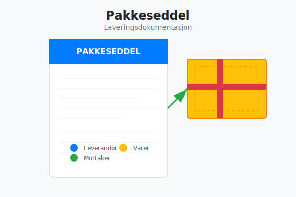
Hva er en Pakkeseddel?
En pakkeseddel er et dokument som dokumenterer innholdet i en vareforsendelse og tjener som bevis for hva som er sendt fra leverandør til kunde. Pakkeseddelen er ikke et fakturadokument, men et rent leveringsdokument som bekrefter at varene er pakket og klar for levering.
Hovedformål med Pakkeseddel
- Dokumentasjon: Dokumenterer hva som faktisk er sendt
- Kontroll: Gjør det mulig for mottaker å kontrollere leveransen
- Sporbarhet: Skaper en sporbar kobling mellom ordre og levering
- Internkontroll: Støtter opp under bedriftens kontrollrutiner
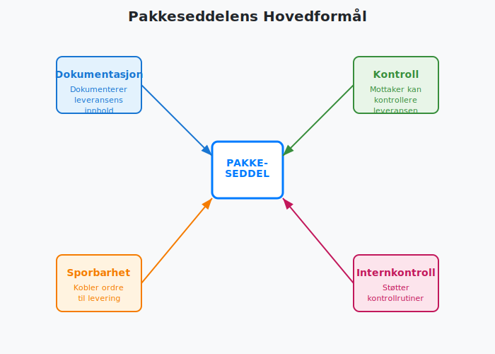
Innhold i en Pakkeseddel
Obligatorisk Informasjon
En pakkeseddel bør inneholde følgende grunnleggende informasjon:
| Informasjonselement | Beskrivelse | Hvorfor viktig |
|---|---|---|
| Leverandørinfo | Navn, adresse, organisasjonsnummer | Identifiserer avsender |
| Mottakerinfo | Navn, leveringsadresse | Sikrer korrekt levering |
| Ordrenummer | Referanse til opprinnelig ordre | Kobler levering til bestilling |
| Dato | Pakkedato og forventet leveringsdato | Tidsstempling av leveranse |
| Varelinjer | Detaljert liste over varer | Kontroll av leveringsinnhold |
| Antall | Antall enheter per vare | Kvantitetskontroll |
| Varenummer/SKU | Unik produktidentifikator | Presis vareidentifikasjon |
Tilleggsinformasjon
Avhengig av bransje og leveranse kan pakkeseddelen også inneholde:
- Serienumre for sporbarhet
- Utløpsdatoer for holdbare varer
- Spesielle instruksjoner for håndtering
- Fraktinformasjon og sporingsnummer
- Returinstruksjoner
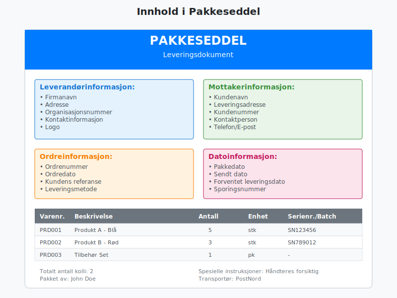
Pakkeseddel vs. Andre Dokumenter
Pakkeseddel vs. Faktura
Det er viktig å skille mellom pakkeseddel og faktura:
| Aspekt | Pakkeseddel | Faktura |
|---|---|---|
| Formål | Dokumenterer levering | Krever betaling |
| Priser | Viser ofte ikke priser | Inneholder alltid priser |
| MVA | Ikke relevant | Må inneholde MVA-informasjon |
| Regnskapsføring | Ikke grunnlag for bokføring | Grunnlag for regnskapsføring |
| Tidspunkt | Følger med leveransen | Kan sendes separat |
For sluttavregning av leveranser og tjenester kan du se Sluttseddel.
Pakkeseddel vs. Leveringsbekreftelse
- Pakkeseddel: Sendes med varene
- Leveringsbekreftelse: Bekrefter at levering er mottatt
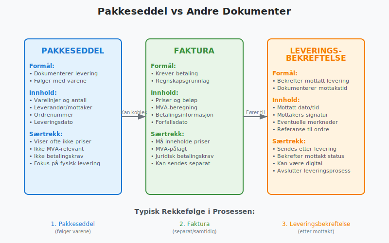
Juridiske Krav og Regelverk
Bokføringsloven og Pakkesedler
Selv om pakkesedler ikke er direkte regulert av bokføringsloven, er de viktige for:
- Dokumentasjon av varetransaksjoner
- Internkontroll og sporingssystemer
- Støtte for regnskapsføring når de kobles med fakturaer
Forbrukerrettigheter
For forhandlere som selger til forbrukere må pakkeseddelen støtte opp under:
- Angrerett - dokumentasjon av leveringsdato
- Reklamasjonsrett - bevis for hva som ble levert
- Garantirettigheter - sporbarhet av produkter
Bransjespesifikke Krav
Enkelte bransjer har spesifikke krav til pakkesedler:
- Medisiner: Batch-numre og utløpsdatoer
- Elektronikk: Serienumre for garantier
- Matvarer: Sporingsinformasjon for mattrygghet
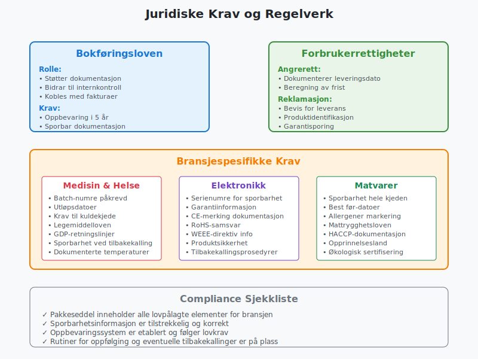
Regnskapsføring og Pakkesedler
Rolle i Regnskapsprosessen
Pakkesedler spiller en viktig støtterolle i regnskapsføringen:
- Internkontroll: Bekrefter at varelager stemmer
- Periodisering: Hjelper med korrekt periodisering av inntekter
- Avstemming: Støtter avstemming mellom ordre, levering og faktura
Kobling til Regnskapskonti
Når pakkesedler brukes sammen med fakturaer påvirker de:
- Kundefordringer: Når varer leveres før fakturering
- Varelager: Reduksjon ved utlevering
- Salg: Inntektsføring ved levering (enkelte tilfeller)
Internkontroll og Pakkesedler
En god internkontrollrutine for pakkesedler inkluderer:
- Matching: Sammenlign pakkeseddel med opprinnelig ordre
- Autorisasjon: Sikre at leveranser er godkjent
- Dokumentasjon: Arkiver pakkesedler systematisk
- Oppfølging: Kontroller at faktura samsvarer med pakkeseddel
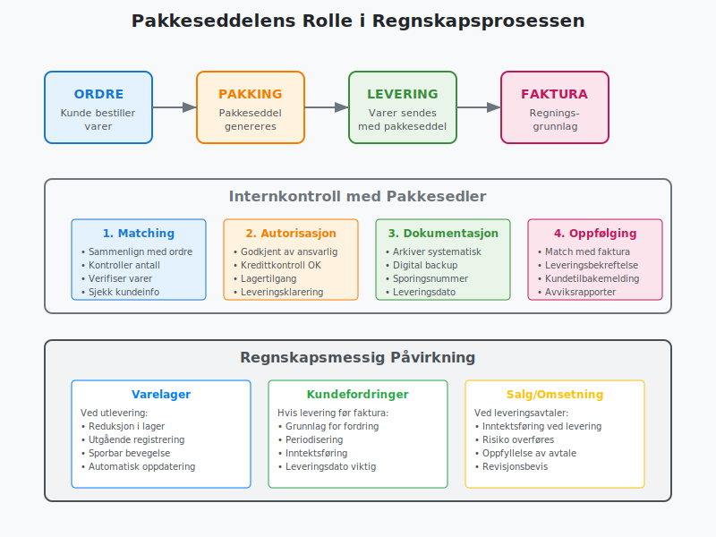
Digitale Pakkesedler
Fordeler med Digital Pakkeseddel
Digitalisering av pakkesedler gir flere fordeler:
- Miljøbesparelser: Redusert papirforbruk
- Effektivitet: Raskere behandling og arkivering
- Sporbarhet: Bedre sporingsmuligheter
- Integrasjon: Automatisk kobling til ERP-systemer
- Kostnadsbesparelser: Lavere porto- og papirutgifter
Implementering av Digital Løsning
Overgang til digitale pakkesedler krever:
- Systemintegrering mellom salgs- og logistikksystemer
- Kundekommunikasjon om ny ordning
- Backup-rutiner for tekniske problemer
- Opplæring av personalet
Tekniske Løsninger
Vanlige tekniske implementeringer inkluderer:
- E-post med PDF-vedlegg
- SMS med lenke til digital pakkeseddel
- App-integrasjon for sanntidsoppdateringer
- QR-koder for rask tilgang til informasjon
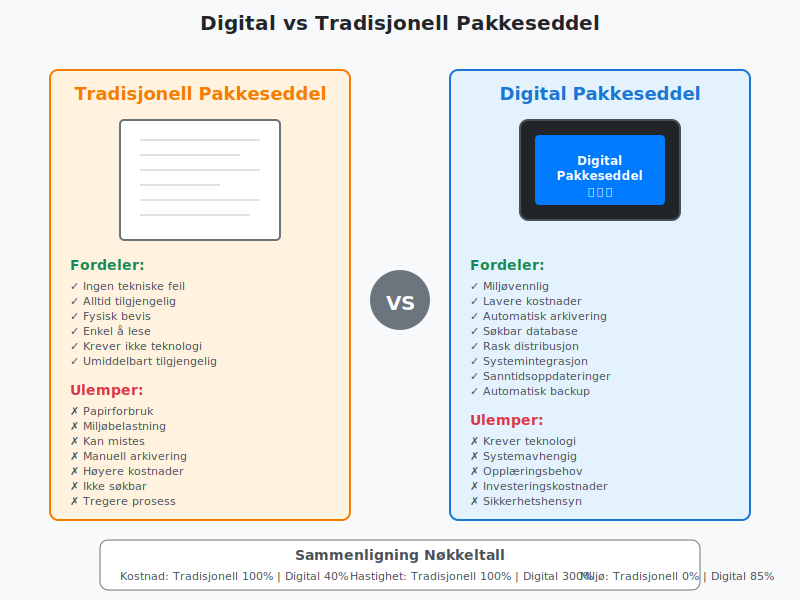
Beste Praksis for Pakkesedler
Design og Layout
En godt utformet pakkeseddel bør:
- Være oversiktlig med klar struktur
- Bruke tydelige fonter og tilstrekkelig skriftstørrelse
- Gruppere relatert informasjon logisk
- Inkludere firmaets logo for profesjonalitet
- Ha konsistent formatering på tvers av leveranser
Kvalitetskontroll
Implementer rutiner for å sikre kvalitet:
- Dobbeltsjekk varelinjer mot ordre
- Verifiser mottakerinformasjon
- Kontroller at alle obligatoriske felt er utfylt
- Test integrasjoner regelmessig
Arkivering og Oppbevaring
For forsvarlig arkivering:
- Digitaliser papirdokumenter hvis mulig
- Organiser etter dato eller kunde
- Sikre backup av digitale filer
- Følg oppbevaringskrav i bokføringsloven

Pakkesedler i Ulike Bransjer
E-handel og Nettbutikker
For nettbutikker er pakkesedler spesielt viktige for:
- Kundeopplevelse: Profesjonelt førsteinntrykk
- Returhåndtering: Enkel identifikasjon av ordre
- Reklamasjoner: Dokumentasjon av leveransens innhold
- Cross-selling: Informasjon om andre produkter
B2B- og B2C-handel (Hva er B2B? og Hva er B2C?)
I B2B-sammenheng fokuserer pakkesedler på:
- Leveringsnøyaktighet: Kritisk for produksjon
- Sporbarhet: Viktig for kvalitetssikring
- Internkontroll: Støtter innkjøpsprosesser
- Automatisering: Integrasjon med kundens systemer
Produksjonsbedrifter
Produsenter bruker pakkesedler til:
- Batch-sporing: Viktig for tilbakekalling
- Kvalitetsdokumentasjon: Kobling til kvalitetskontroll
- Leverandørstyring: Sporbarhet i forsyningskjeden
- Regnskapsstøtte: Grunnlag for kostnadskalkulus
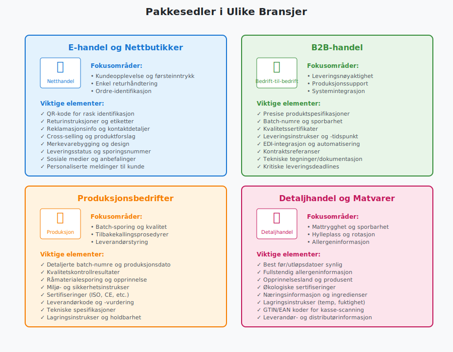
Vanlige Utfordringer og Løsninger
Manglende Pakkesedler
Problem: Leveranser som ankommer uten pakkeseddel
Løsninger:
- Implementer digital levering av pakkesedler
- Lag standardrutiner for håndtering av manglende dokumenter
- Opprett intern pakkeseddel basert på mottatt vare
- Kontakt leverandør for å få dokumentasjonen ettersendt
Feil i Pakkesedler
Problem: Avvik mellom pakkeseddel og faktisk levering
Løsninger:
- Implementer kvalitetskontroll ved pakking
- Bruk strekkoder eller RFID for redusert feilrisiko
- Opprett avviksrapporter for systematisk oppfølging
- Tren personalet i viktigheten av nøyaktighet
Integrasjonsutfordringer
Problem: Manglende integrasjon mellom systemer
Løsninger:
- Invester i ERP-system med god integrasjon
- Bruk API-er for systemkommunikasjon
- Implementer middleware for datatransformering
- Vurder standardiserte formater som EDI
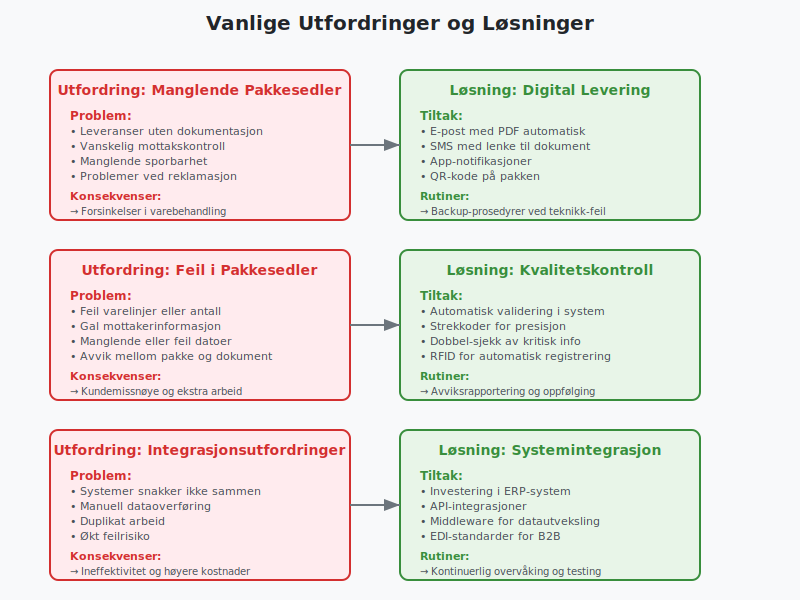
Automatisering og Teknologi
Automatisk Generering
Moderne ERP-systemer kan automatisk generere pakkesedler basert på:
- Salgsordre og kunde-informasjon
- Lagerstatus og tilgjengelighet
- Leveringsruter og transportører
- Kundepreferanser for leveringsformat
Integrasjon med Logistikk
Logistikkintegrasjon gir fordeler som:
- Automatisk sporingsinformasjon på pakkeseddel
- Optimerte leveringsruter basert på destinasjon
- Sanntidsoppdateringer til kunde
- Kostnadsoptimalisering gjennom bedre planlegging
Kunstig Intelligens og ML
AI-teknologi kan forbedre pakkesedler gjennom:
- Prediktiv pakking basert på historiske data
- Automatisk kvalitetskontroll ved hjelp av bildegjenkjenning
- Intelligent routing for optimal leveringseffektivitet
- Personaliserte leveringsopsjoner basert på kundedata
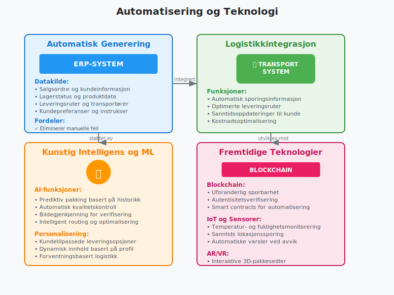
Miljømessige Hensyn
Bærekraftige Pakkesedler
Miljøvennlige alternativer inkluderer:
- Digitale løsninger som erstatter papir
- Resirkulert papir for fysiske pakkesedler
- Kombinerte etiketter som reduserer materialforbruk
- QR-koder som erstatter detaljert tekstinformasjon
Sirkulær Økonomi
Pakkesedler kan støtte sirkulær økonomi gjennom:
- Returinstruksjoner for gjenbruk av emballasje
- Informasjon om resirkulering av produkter
- Sporbarhet for bedre livsløpsanalyse
- Digitalisering som reduserer papirforbruk
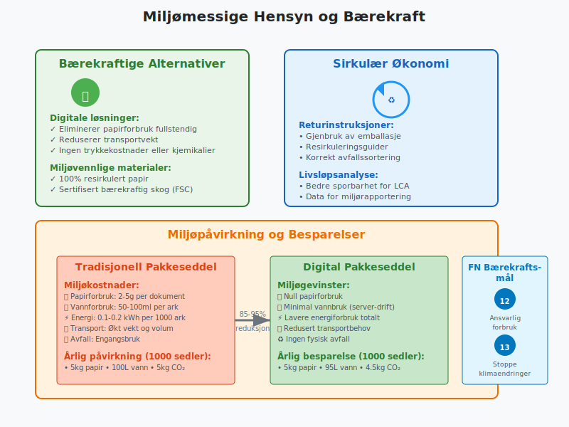
Fremtiden for Pakkesedler
Teknologiske Trender
Fremtidige utviklingstrekk inkluderer:
- Blockchain for sporbarhet og autentisitet
- IoT-sensorer for sanntidsmonitorering av leveranser
- Augmented Reality for interaktive pakkesedler
- Voice-aktiverte systemer for enklere håndtering
Regulatoriske Endringer
Forventede regelverksendringer:
- Strengere miljøkrav til dokumentasjon
- Økte krav til digital sporbarhet
- Harmonisering av europeiske standarder
- GDPR-tilpasninger for personvernhensyn
Bransjeutvikling
Bransjespesifikke trender:
- Farmasøytisk: Økt fokus på sporbarhet
- Matvarer: Strengere krav til mattrygghet
- E-handel: Mer personaliserte leveringsopplevelser
- B2B: Økt automatisering og systemintegrasjon
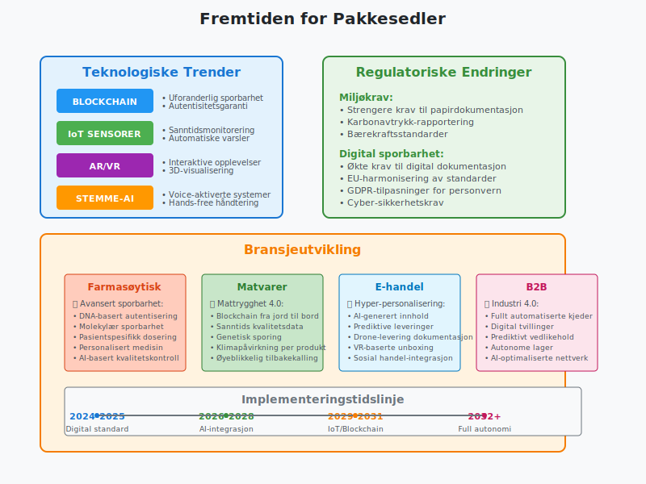
Konklusjon
Pakkeseddel er et fundamentalt dokument i varehandel som går langt utover bare å liste opp leveransens innhold. Den spiller en kritisk rolle i:
- Kvalitetssikring og kundeservice
- Internkontroll og regnskapsføring
- Juridisk dokumentasjon og sporbarhet
- Operasjonell effektivitet og automatisering
Viktige Suksessfaktorer
For å få maksimal nytte av pakkesedler bør bedrifter:
- Standardisere format og innhold
- Digitalisere prosessen hvor mulig
- Integrere med andre forretningssystemer
- Fokusere på kundeopplevelsen
- Følge relevante juridiske krav
Fremtidens Muligheter
Teknologisk utvikling åpner for nye muligheter som digitale løsninger, bedre sporbarhet og økt automatisering. Bedrifter som investerer i moderne pakkeseddelløsninger vil kunne oppnå konkurransefortrinn gjennom bedre kundeservice, lavere kostnader og økt operasjonell effektivitet.
Enten du driver e-handel, produksjon eller grossistvirksomhet, er en godt gjennomtenkt tilnærming til pakkesedler en investering som vil lønne seg både på kort og lang sikt.
Husk at kvaliteten på pakkeseddelen ofte reflekterer profesjonaliteten til hele virksomheten, og kan være avgjørende for kundeforholdet og fremtidig omsetning.